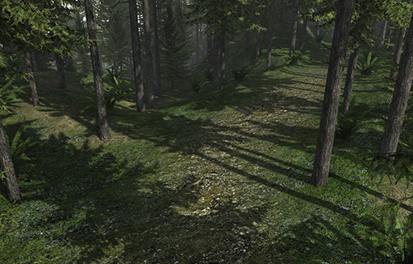
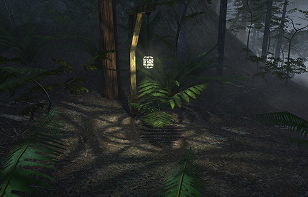
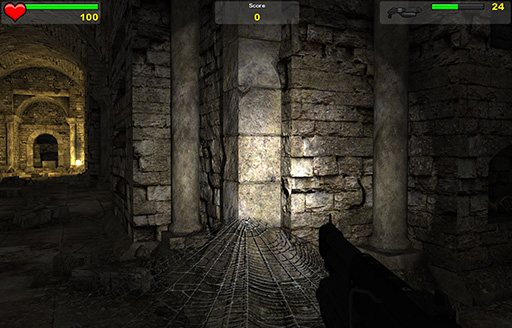

Lights and Shadows
From C4 Engine Wiki
The C4 Engine has four distinct types of light sources that can be used to illuminate a scene. Some of the differences among these types are whether the light is a point source or an infinite directional light and whether the light projects a texture map onto the scene. Lights are placed into a scene by using the tools in the Lights Page in the World Editor.
Contents |
Infinite Light

An infinite light illuminates a scene with a constant brightness from a single direction. When it is placed in a world, only the direction in which it is pointing matters, not its position.
An infinite light uses a technique called cascaded shadow mapping to render shadows into the scene, and an example is shown in Figure 1. Shadow mapping hardware on the GPU is used to perform per-pixel depth comparisons, causing correct shadows to be applied to any objects within the cascade ranges of the camera. The shadow map is completely dynamic and updated every frame.
For more information about setting up cascade ranges, see Cascaded Shadow Mapping.
Point Light
A point light emits light from a single point in space and influences a spherical region of a given radius. The intensity of the light gradually falls off to zero at the outer boundary of the light's sphere.
To create a point light, select the point light tool from the Lights Page and use it to place a light in your level at the desired position. Hold the mouse button down and drag away from the light position to set the radius for the point light. Alternatively, you could later set the radius manually in the Transform Page by entering a positive value in the X size field.
Point lights cast shadows by rendering a cube shadow map. Up to six two-dimensional texture faces are rendered each frame during which the light is visible in order to produce dynamic shadows. If the center of the light source is not visible to the camera, then at least one of these faces can be skipped by the engine as an optimization.
Points lights can be faded out as they get farther from the camera and ultimately disabled when the camera moves beyond a maximum range. These distances can be specified in the light's settings, and they provide a performance optimization in complex scenes.
Cube Light

The texture used by a cube light can be imported or generated by the engine. To generate a cube map for shadow casting, follow these steps:
- Create a new world and place the cube light and any geometry that will participate in the projected shadow into this world.
- Open the Get Info dialog for the infinite root zone by selecting it in the scene graph view and hitting Ctrl-I. Set the clear color to white (255, 255, 255), and set the ambient color to black (0, 0, 0).
- Open the Get Info dialog for the cube light, and set its color to black (0, 0, 0). Also, set the name of the texture that will be generated and its size. Be sure to check the “Generate shadow texture” box.
- Save the world containing the cube light, and then start a new game with that world.
- Type
gentexin the command console, and a small developer window will appear. - Make sure the “Light projections” box is checked, and click the Generate button. This will cause the cube light in the world to generate its CUBE texture map and write it to the disk.
Once these steps have been followed, the resulting cube texture map can be used on any cube light to project a shadow texture. When used in conjunction with the original geometry that generated the texture, the projected cube map can be cast onto the geometry that is actually casting the shadows in the map, which doesn't look right. To prevent this from happening, uncheck the “Render cube light projection” flag under the Geometry pane for each of the geometries surrounding the light.
Spot Light

Optimizations
Shadows can eat up a lot of rendering time. The C4 Engine uses several advanced techniques to automatically optimize shadows as much as possible, but there are additional design decisions and manual steps that can be taken to increase performance. Here are some tips for getting the best results.
- First, it is essential that you use zones and portals to partition large worlds. The engine can use this information to determine which objects really need to cast shadows and eliminate those objects whose shadows couldn't possibly be visible.
- Be sure to turn off shadow casting for objects that can't actually cast shadows on anything else. In most rooms, for example, the floor, ceiling, and some walls never cast visible shadows. Turn shadow casting off by unchecking the “Render shadow” box in the Node Info dialog for a geometry.
- Make the range for point, cube, and spot lights as small as possible. This will allow the engine to restrict the screen area covered by shadows cast by those lights. If you need to make a light brighter, try increasing the “Brightness scale” in its Node Info dialog before increasing the light's range.
- Use shadow spaces when appropriate. These will limit the size of the regions in which shadows need to be rendered.